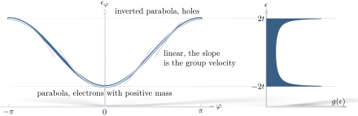
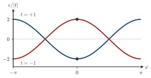
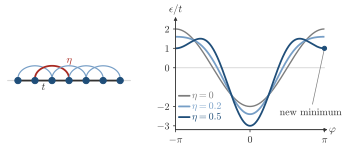

Page 4 of 11 of this session
2.5 Bloch’s theorem and the first band structure
What is the spectrum of an infinite chain, which no computer can diagonalize as a matrix? We will now see that one Fourier transform gives the band \(\epsilon_\varphi=-2t\cos\varphi\) of (2.8), and that a second-neighbor hopping \(\eta\) adds the term \(-2\eta\cos(2\varphi)\) of (2.9).
\[[H,S] = 0. \tag{2.3}\]
This is the statement of Section 2.3 that a Hamiltonian commutes with a symmetry \(S\), so that the two have a common eigenbasis. Here \(S\) is the translation \(T\) by one site of Section 2.4, and its eigenvalue is a phase \(e^{i\varphi}\), which is the Bloch phase.
Let us now do this fully explicitly for the one-dimensional tight-binding chain,
\[H = -t\sum_n \left(c_n^\dagger c_{n+1} + \text{h.c.}\right). \tag{2.5}\]
We take \(t>0\) in all of this session, the same sign convention as in (1.6) of Session 1.
Since \([H,T]=0\), we look for eigenstates that are a superposition over all sites that transforms in a simple way under translation,
\[|\Psi_\varphi\rangle = \sum_n e^{in\varphi}\, c_n^\dagger|0\rangle. \tag{2.6}\]
It is cleaner to invert this relation and to define new operators that are labelled by \(\varphi\) instead of by site,
\[\Psi_\varphi^\dagger = \frac{1}{\sqrt L}\sum_n e^{in\varphi}\, c_n^\dagger, \qquad c_n^\dagger = \frac{1}{\sqrt L}\sum_\varphi e^{-in\varphi}\, \Psi_\varphi^\dagger, \tag{2.7}\]
which is an ordinary Fourier transform between real space and the space of Bloch phases. Here we close the chain into a ring of \(L\) sites, as in Section 2.4, so that \(\varphi\) takes the \(L\) values \(2\pi m/L\), and at the end we take \(L\to\infty\). The factor \(1/\sqrt L\) makes the transform unitary, so \(\Psi_\varphi^\dagger|0\rangle\) is the state (2.6) normalized to one, and (2.8) below does not change with it. Putting (2.7) into (2.5) gives
\[\sum_n c_n^\dagger c_{n+1} = \frac{1}{L}\sum_{n,\varphi,\varphi'} e^{-in\varphi}\,e^{i\varphi'(n+1)}\, \Psi_\varphi^\dagger \Psi_{\varphi'} = \sum_{\varphi,\varphi'} e^{i\varphi'}\,\delta_{\varphi\varphi'}\, \Psi_\varphi^\dagger\Psi_{\varphi'} = \sum_\varphi e^{i\varphi}\, \Psi_\varphi^\dagger\Psi_\varphi,\]
where the sum over \(n\) gave the orthogonality relation \(\sum_n e^{in(\varphi'-\varphi)} = L\,\delta_{\varphi\varphi'}\), and the factor \(L\) cancels the \(1/L\) of the two normalizations. The Hermitian conjugate term gives the complex conjugate phase, and the Hamiltonian becomes diagonal.
The chain (2.5) is diagonal in the Bloch phases,
\[H = -t\sum_\varphi \left(e^{i\varphi}+e^{-i\varphi}\right)\Psi_\varphi^\dagger\Psi_\varphi = \sum_\varphi \epsilon_\varphi\, \Psi_\varphi^\dagger\Psi_\varphi, \qquad \boxed{\epsilon_\varphi = -2t\cos\varphi}. \tag{2.8}\]
For \(t>0\) the band has its bottom \(-2t\) at \(\varphi=0\) and its top \(2t\) at \(\varphi=\pi\), so its width is \(4t\).
This is our first band structure, and we obtained it without writing down an infinite matrix, and without diagonalizing it. We only needed the fact that the eigenstates must have a definite phase under translation, and then a single Fourier transform gave the rest.
Some features of this dispersion should be discussed explicitly, since they appear again and again in the course. Near the bottom of the band (\(\varphi=0\)), \(\epsilon_\varphi \approx -2t + t\varphi^2\), which is a parabola that opens upward. Near the top of the band (\(\varphi=\pi\)), we write \(\varphi=\pi+\delta\) and obtain \(\epsilon_\varphi\approx 2t-t\delta^2\), which is a parabola that opens downward. The two curvatures have opposite sign. We define the effective mass in Section 2.9. With it, this means that low-energy quasiparticles near the bottom of the band behave like ordinary electrons with positive mass, while those near the top behave like holes with negative mass.
Near the middle of the band, at \(\varphi=\pi/2\) where \(\epsilon_\varphi\) crosses zero, the dispersion is closer to linear than to quadratic. This is a first sign of the Dirac-like physics that we will see in detail in Section 2.11. All of this is shown in Figure 2.2, which also shows the density of states of this band.

The band of the chain with the hopping \(t\) between neighbors is
\[\epsilon_\varphi=-2t\cos\varphi.\]
Where is its minimum when \(t<0\)?
Show the answers
- A. ✓ True
This is true. For \(t<0\) the band is \(+2|t|\cos\varphi\), which is the same curve upside down. The minimum \(-2|t|\) then moves from \(\varphi=0\) to \(\varphi=\pi\).
- B. ✗ False
This is false. For \(t=-1\) the energy at \(\varphi=0\) is \(+2\), which is the top of the band. The bottom is \(-2\), at \(\varphi=\pi\).

The band \(-2t\cos\varphi\) for \(t=+1\) and for \(t=-1\), computed with pyqula, with the energy in units of \(|t|\). The second curve is the first one turned upside down, so the energy at \(\varphi=0\) is \(-2\) for the first and \(+2\) for the second. - C. ✗ False
This is false. At \(\varphi=\pi/2\) the energy is \(0\) for either sign of \(t\), since \(\cos(\pi/2)=0\). This is the middle of the band and not its bottom.
The sign of the hopping decides which end of the zone has the lowest energy.
Notebook check-in: session2.ipynb, “One dimensional chain” (Core)
Build the chain of (2.5), diagonalize it numerically, and check that the numerical spectrum follows \(\epsilon_\varphi=-2t\cos\varphi\) from (2.8) when you scan \(\varphi\) across the Brillouin zone. The notebook takes the hopping \(+1\), which is \(t=-1\) here, so its band is \(+2\cos\varphi\), with the bottom at \(\varphi=\pi\). The notebook plots \(\varphi\) from \(0\) to \(2\pi\), so the bottom is still in the middle of its plot, and the cell is spinful, so each level comes twice.
A natural extension is to check that the same method also works beyond nearest-neighbor hopping. We add a second-neighbor hopping term \(-\eta\sum_n(c_n^\dagger c_{n+2}+\text{h.c.})\) to (2.5). This term has the same translational symmetry as before, so the eigenstates (2.6) do not change at all, and we only need to compute the eigenvalues again. We repeat the Fourier substitution for the new term, which couples \(c_n^\dagger\) with \(c_{n+2}\) and so gives a phase \(e^{\pm2i\varphi}\) instead of \(e^{\pm i\varphi}\), and we obtain
\[\epsilon_\varphi = -2t\cos\varphi - 2\eta\cos(2\varphi). \tag{2.9}\]
The steps From the second-neighbor hopping to the band (2.9)
Let us start with the first-neighbor term, which we transformed above. In \(c_n^\dagger c_{n+1}\) the operator of the site \(n+1\) brings the phase \(e^{i\varphi'(n+1)}\). The sum over \(n\) keeps only \(\varphi'=\varphi\), and what is left of this phase is \(e^{i\varphi}\).
A hopping to the neighbor at the distance \(m\), \(c_n^\dagger c_{n+m}\), goes through the same steps with \(n+m\) in place of \(n+1\). So it gives \(e^{im\varphi}\) in place of \(e^{i\varphi}\), and its Hermitian conjugate gives \(e^{-im\varphi}\). A hopping \(-t_m\) to the neighbor at the distance \(m\) then adds to the band
\[-t_m\left(e^{im\varphi}+e^{-im\varphi}\right) = -2t_m\cos(m\varphi).\]
For \(m=1\) and \(t_1=t\) this is (2.8). For \(m=2\) and \(t_2=\eta\) it is the new term of (2.9),
\[-\eta\left(e^{2i\varphi}+e^{-2i\varphi}\right) = -2\eta\cos(2\varphi).\]
pyqula builds a band in the same way from its argument tij, where the place \(m\) of the list is the hopping to the neighbor at the distance \(m\). So tij=[-1.0,-eta] gives (2.9) for \(t=1\).
Schematic 2.6 shows the chain with its two hoppings, and the band of (2.9) for three values of \(\eta\).

g2_chain_second_neighbor.py
The first-neighbor hopping of a chain is \(t\), and the second-neighbor hopping is \(\eta\). Its band is
\[\epsilon_\varphi = -2t\cos\varphi - 2\eta\cos(2\varphi).\]
What is the energy at \(\varphi=\pi/2\)?
Show the answers
- A. ✗ False
This is false. Take \(t=1\) and \(\eta=0.2\). The first term vanishes, but the second gives \(-0.4\cos\pi=+0.4\), which is not zero.
- B. ✓ True
This is true. The nearest-neighbor term vanishes, since \(\cos(\pi/2)=0\). The second-neighbor term gives \(-2\eta\cos\pi=+2\eta\).
- C. ✗ False
This is false. For \(\eta=0.2\) we get \(-0.4\cos\pi\), and since \(\cos\pi=-1\) the result is \(+0.4\) and not \(-0.4\).
The second-neighbor term has the phase \(2\varphi\), so it is not zero where the first one is.
A chain has the first-neighbor hopping \(t\) and the second-neighbor hopping \(\eta\). Each picture is its band for \(t=1\) and one value of \(\eta\),
\[\epsilon_\varphi = -2t\cos\varphi - 2\eta\cos(2\varphi).\]
Which band has a local minimum at \(\varphi=\pi\)?
Show the answers
- A. ✗ False
This is false. This is the band for \(\eta=0\), which is \(-2\cos\varphi\). At \(\varphi=\pi\) it has its maximum \(2\), and the curvature there is \(-2\).
- B. ✓ True
This is true. This is the band for \(\eta=0.5\). Its curvature at \(\varphi=\pi\) is \(2\), which is positive, so \(\varphi=\pi\) is a local minimum. It lies \(0.5\) below the two maxima at \(\cos\varphi=-1/2\).
- C. ✗ False
This is false. This is the band for \(\eta=0.2\). It is flatter at \(\varphi=\pi\) than the band for \(\eta=0\), but its curvature there is \(-0.4\), which is negative, so \(\varphi=\pi\) is still a maximum.
A second-neighbor hopping above \(t/4\) turns the top of the band at \(\varphi=\pi\) into a local minimum.
The chain with a second-neighbor hopping has the band
\[\epsilon_\varphi = -2t\cos\varphi - 2\eta\cos(2\varphi),\]
with \(t>0\) and \(\eta\ge0\). Find above which \(\eta\) the point \(\varphi=\pi\) becomes a local minimum. Then find the width of the band below this value, and for \(\eta=0.5\,t\).
Solution
The point \(\varphi=\pi\) is an extremum for every \(\eta\), since the derivative vanishes there,
\[\epsilon'_\varphi = 2t\sin\varphi + 4\eta\sin(2\varphi) = 2\sin\varphi\,\left(t+4\eta\cos\varphi\right).\]
It is a minimum when the second derivative is positive,
\[\epsilon''_\pi = 2t\cos\pi + 8\eta\cos(2\pi) = -2t+8\eta > 0,\]
meaning that \(\eta>t/4\). Below this value the factor \(t+4\eta\cos\varphi\) has no zero, so the only extrema are the bottom \(-2t-2\eta\) at \(\varphi=0\) and the top \(2t-2\eta\) at \(\varphi=\pi\). The width is then \(4t\), as for \(\eta=0\), since the second-neighbor term moves both ends by the same \(-2\eta\).
Above \(t/4\) the factor vanishes at \(\cos\varphi=-t/4\eta\), where the two new maxima sit, with the energy \(2\eta+t^2/4\eta\). For \(\eta=0.5\,t\) this is \(\cos\varphi=-1/2\) and the energy \(1.5\,t\), and the bottom is \(-3t\), so the width is \(4.5\,t\).
Each extremum of the band is a point where the velocity vanishes, so it gives a Van Hove singularity in the density of states of Section 2.9. A measurement of the density of states, such as the tunneling conductance of STM, shows it as a peak.
Notebook check-in: session2.ipynb, “One dimensional chain, with longer range hopping” (Core)
Add the second-neighbor hopping \(\eta\) to the chain from the previous box, and check that the band you compute numerically agrees with (2.9). The cell itself changes the third-neighbor hopping \(t_3\), in the third place of tij. It is also useful to check the density of states of Section 2.9 here. The hopping \(\eta\) can create a second local extremum in \(\epsilon_\varphi\), and with it one more Van Hove singularity in the spectrum.
Try it. Put the second neighbor hopping in the second place of tij, for example tij=[1.0,0.2,0.0], and compare the band with (2.9). Increase it to \(0.5\), and check that the band gets an extra extremum and the density of states an extra peak. The notebook uses the opposite sign of the hopping, so its band is turned upside down.
The computational tool of the whole course is pyqula, a Python package that computes band structures such as this one in 1D, 2D, 3D and higher dimensions. It is installed with pip install pyqula, and the notebook is the place where you run the code of this section yourself.
- In Section 2.7 the same Fourier transform with several orbitals per cell gives a matrix, the Bloch Hamiltonian.
- The band of the chain at half filling gives the Lindhard function of Section 9.4, and its two Fermi points are the nesting of Section 9.4b.
- The sign convention \(t>0\) of (2.5) is also the one of the square lattice (2.14) and of the Kitaev chain of Section 5.16. The dimer (1.2), the SSH chain (2.13) and the graphene form (2.19) write the hopping with a plus sign.